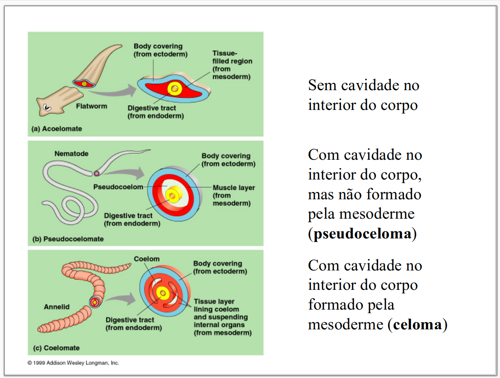
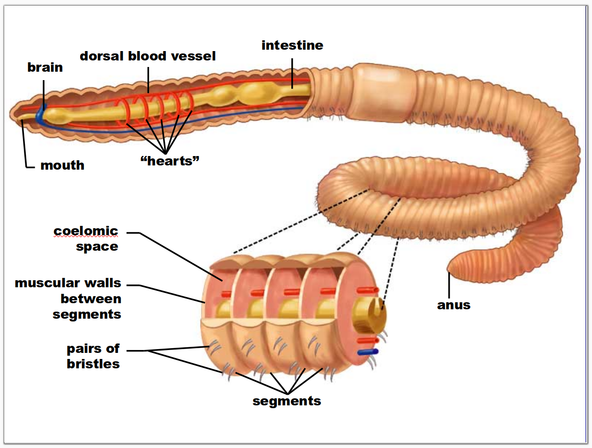
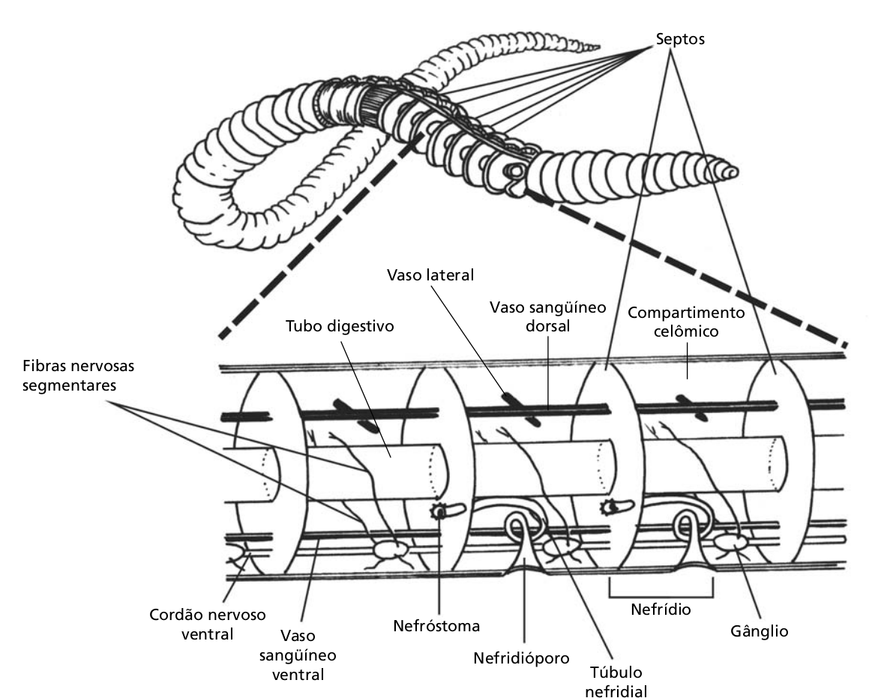
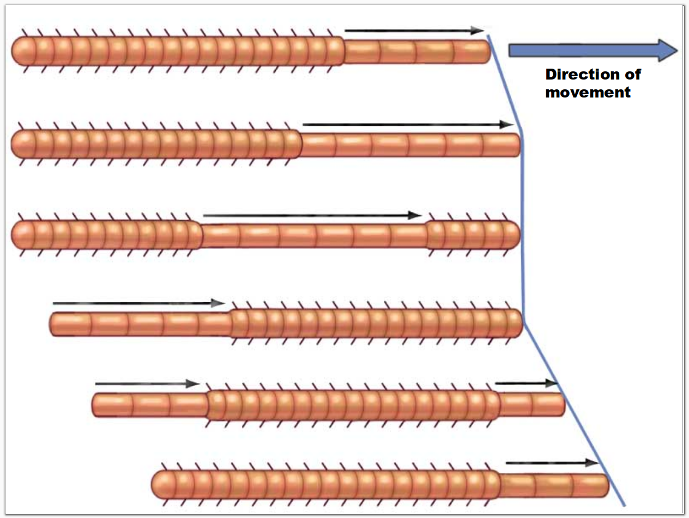
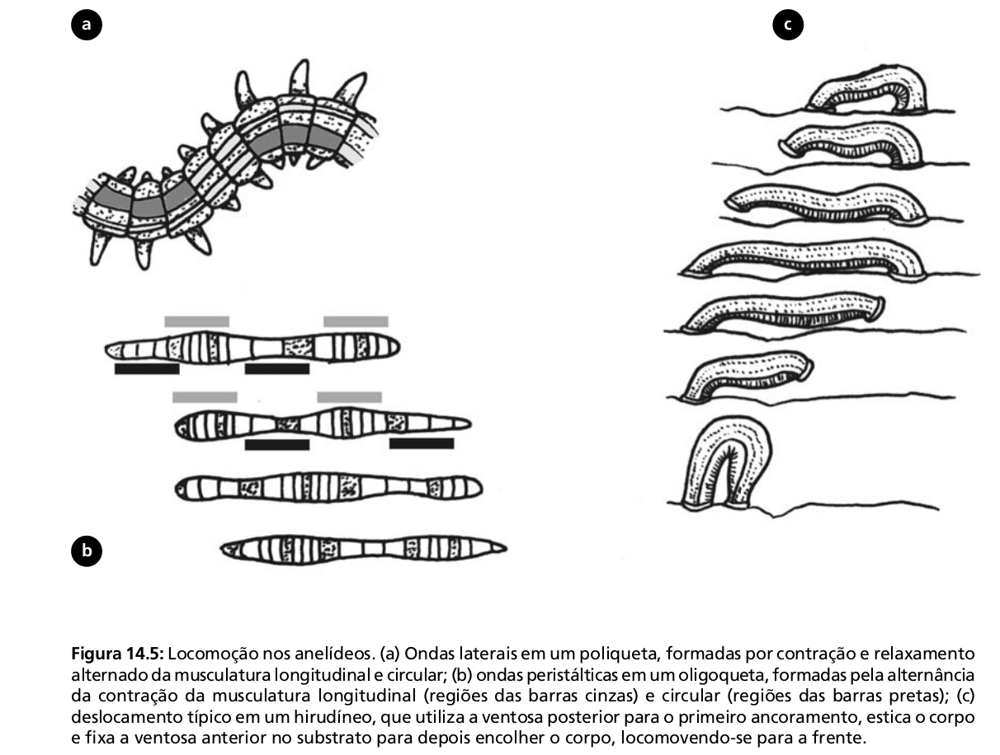
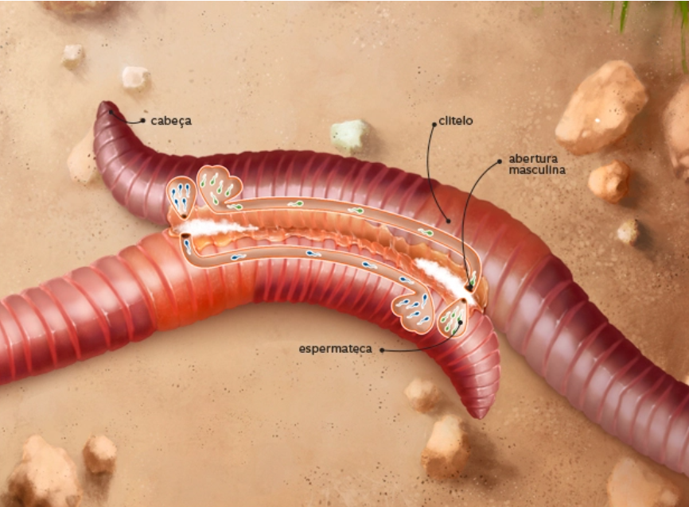
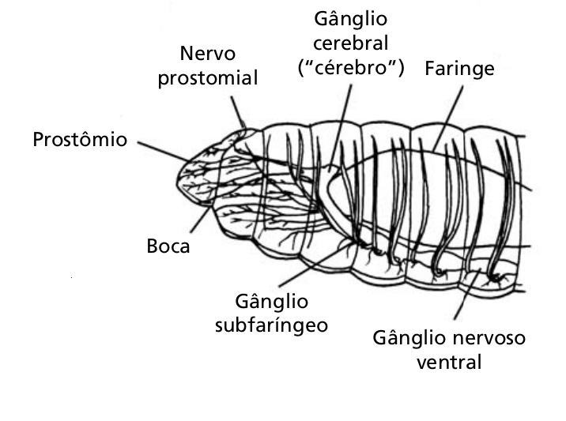
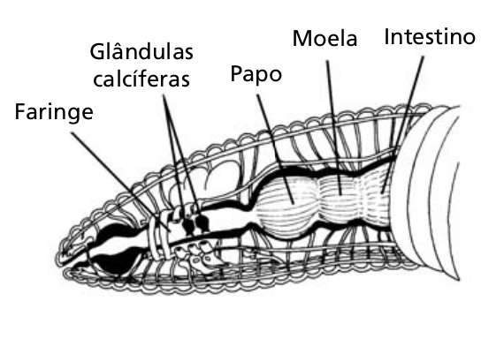
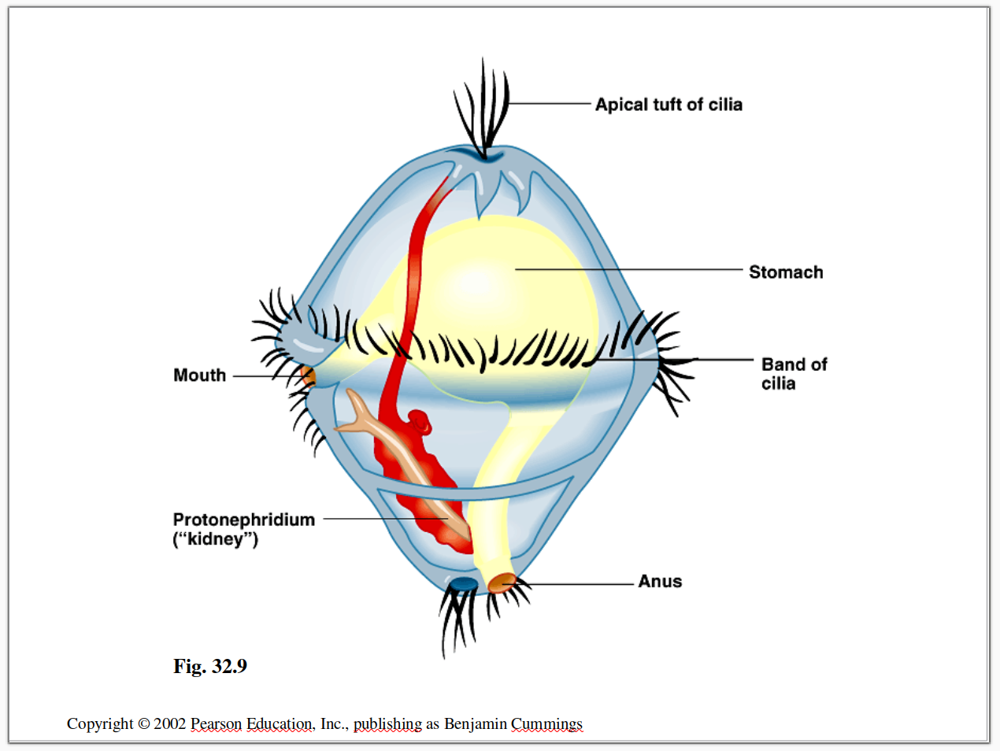
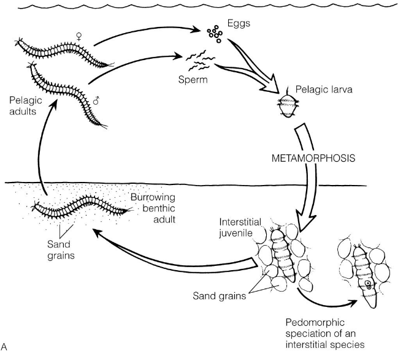

Prof. Maurício Garcia de Camargo
2026-05-07
A sinapomorfia que define o grupo dos Annelida em relação aos filos anteriores é o metamerismo (segmentação corporal), que foi o primeiro passo para a evolução das articulações dos artrópodos.
Devido ao sucesso evolutivo do metamerismo, Annelida tem hoje cerca de 16000 espécies (deve chegar a 100 mil) que invadiram todos os habitats onde existe algum grau de umidade.
Outra novidade evolutiva que os Anellida trouxeram foi o celoma verdadeiro.
Nota
Para entender a importância do metamerismo, temos que saber o que é um organismo celomado.
Celomados





| Classe | Clitelo1 | Parapódios2 | Cerdas3 | Ambiente | Espécies |
|---|---|---|---|---|---|
| Polychaeta | Não | Sim | Muitas | Quase 100% marinho | 16000 |
| Oligochaeta | Sim | Não | Poucas | Quase todos terrestres ou de água doce | 3500 |
| Hirudinea | Sim | Não | Não | Todos de água doce | 500 |
Morfologia e fisiologia dos Annelida
Clitelo está presente em Oligochaeta e Hirudinea (chamos de Clitellata), representando por um anel glandular facilmente reconhecido na região anterior do corpo, que auxilia na reprodução produzindo muco para facilitar a cópula.




